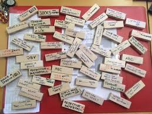
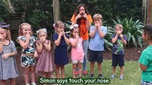

1. Make It An Immersive Experience
Children grasp things quickly once they are in an environment that fully supports their learning process. Let the atmosphere be productive so that they start grasping the nuances of the language from everywhere. These could be from conversations amongst yourselves or on the phone, watching media that has professional English spoken in it, and so on.
2. Teaching English Can Be Made Musical
Most parents resort to using textbook methods of teaching English right off the bat. For small kids, this can get boring rather quickly. Instead, you can start using songs, poems, or even actual music that have English lyrics in them. These could be simple rhymes to even popular songs. By listening to the words and the rhythm of the conversations, kids can get more acquainted with how the language sounds and what it means, and start picking up on these finer details.
3. Converse in English At Home
Small kids will not be able to start making sentences or structuring their thoughts immediately in English. Hence, it is necessary that they learn to communicate what they already can in English. Talk to them about daily activities and things you usually converse about in English. Right from asking them if they brushed their teeth to teaching them how to phrase a question when they want to ask you something. For example, if they want milk, rather than saying “I want milk” in your native language, encourage them to form a proper request such as “I would like some milk from the refrigerator.”
4. Make English Fun By Turning It Into a Game
Reading books or talking in English is not the only way to learn the language. Undertaking fun games and activities that resort to understanding the meaning of the language helps children get a deeper grasp of it. Games like Pictionary help them express their idea in pictures while trying how best a picture can translate into an English word. Dumb charades focus on expressions, hand gestures, and body language, making them better at conveying what they want to say through non-verbal cues. Hangman will help them understand how to eliminate unwanted letters and understand the formation of words and pronunciation in a fun way.
5. Learning is Fun When It is Told Through a Story
Kids have an extremely vivid and visual imagination. Using that to their advantage while teaching English is a great way to make them learn. Use illustrated storybooks to help them understand how words help visualize environments, characters, and settings. Tell them stories and make use of different words to help them understand how it changes their perception of it. For example, help them visualize how a river is different from a stream, a creek, or a brook. Using visuals and sounds helps them express their thoughts better.
6. Grammar Can Be Made Easy By Repetition
Teaching grammar to kids can be quite a task. Teaching English grammar to children is usually done once the child enters a certain grade at school. The number of rules and sentence structure formats can easily get mind-boggling. The best way to introduce them to the world of grammar is to keep using the right grammar in general conversations. The moment they use wrong grammar, allow them to hear the sentence with right grammar and let them understand which one sounds better and is right to be spoken. With enough repetition in daily use, kids can start getting a hang of the right way to construct a sentence.
7. Mix Games They Like with Nuggets of English Language
Not all kids will be up for learning English in the way you would want them to. Therefore, it is best to integrate the language into the activities they already enjoy. If your kid enjoys playing Jenga, you could tweak the game by writing questions on the Jenga blocks and your kid would have to answer the question before the round proceeds. If they enjoy puzzles and riddles, you could pepper clues with one-liners having blanks, or English phrases and poems, that they need to recall and complete to get the next clue.
8. Creative Expression is the Best Way to Gauge Progress
In order to ensure that learning English is a continuous process, it is very important to know where your kid stands and whether you can take the learning a notch higher. Pick a day and time, and ask your kid to come up with their own story or a poem, or talk about something interesting that happened in the week. Help them write it down, even if it has multiple grammatical and spelling mistakes. Let them express it in steps and then correct them gradually.
9. Learning a Language Can Be a Physical Exercise Too
Everybody knows the game ‘Simon Says’ really well. Not only is it a test of language, but it is also a test of how quickly you can process instructions. Ask your kid to get their friends together and treat them to an evening of Simon Says. Announce a small prize for the kid who wins the round.
10. Nothing Beats Learning English Like Watching a Wonderful Film
Learning should always be entertaining. And kids can quickly descend into the zone of boredom and find something else to keep their attention. Show them an appropriate English film and let them experience the dialogues and the storyline. Later, ask them to roleplay certain characters or tell the story in their own words in English.